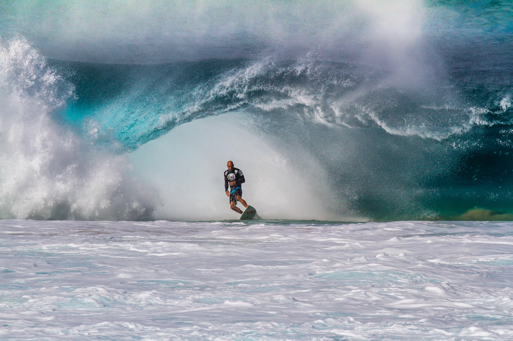

Kelly Slater não construiu apenas a carreira mais vitoriosa do surfe masculino. O americano mudou o padrão pelo qual os grandes atletas da modalidade passaram a ser avaliados. Seus 11 títulos mundiais representam o recorde absoluto entre os homens, mas a dimensão de sua trajetória também envolve 56 vitórias no circuito principal, domínio em ondas históricas, evolução técnica e capacidade de enfrentar diferentes gerações sem deixar de ser competitivo.
Nascido em Cocoa Beach, na Flórida, Slater chegou ao circuito profissional no início da década de 1990 e rapidamente deixou de ser tratado apenas como uma promessa. Em 1992, aos 20 anos, conquistou seu primeiro título mundial. Em 2011, aos 39, levantou a taça pela 11ª vez. Com isso, tornou-se simultaneamente o campeão mundial masculino mais jovem e o mais velho da história do surfe profissional.
Esses números seriam suficientes para colocá-lo entre os maiores atletas de todos os tempos. No entanto, o que realmente tornou Kelly Slater um personagem tão importante foi a maneira como ele venceu. O americano não dominou apenas um ciclo favorável. Ele atravessou mudanças de regulamento, evolução de equipamentos, novas abordagens de treinamento e transformações profundas na forma de surfar competitivamente.
O recorde de 11 títulos mundiais:
- 1992
- 1994
- 1995
- 1996
- 1997
- 1998
- 2005
- 2006
- 2008
- 2010
- 2011
A sequência mostra duas fases marcantes da carreira do americano: o domínio durante a década de 1990, incluindo cinco títulos consecutivos entre 1994 e 1998, e o retorno ao topo nos anos 2000, quando conquistou mais cinco campeonatos mundiais.
Depois do primeiro título, o americano iniciou um período de domínio praticamente absoluto. Entre 1994 e 1998, conquistou cinco campeonatos consecutivos. Nenhum adversário conseguiu interromper sua sequência, e Slater se tornou o principal rosto de uma fase em que o surfe profissional ampliava seu alcance internacional.
Naquele momento, ele reunia velocidade, criatividade e uma capacidade rara de executar manobras modernas sem perder fluidez. Também apresentava um repertório completo em ondas pequenas, grandes, tubulares ou de alta performance. Não dependia de uma única condição para vencer.
Depois do título de 1998, Slater se afastou do circuito em tempo integral. Parecia possível que sua carreira como candidato ao campeonato estivesse encerrada. O retorno, porém, abriu uma segunda fase ainda mais impressionante. Ele voltou ao Tour em 2002, enfrentou uma geração renovada e conquistou outros cinco títulos mundiais. A sequência transformou a longevidade em um dos elementos centrais de sua história.
O campeão que atravessou diferentes gerações
Grandes atletas costumam ser associados a um período específico. Kelly Slater escapou dessa lógica. Ele venceu surfistas que começaram a competir antes de sua ascensão, dominou adversários de sua própria geração e seguiu disputando baterias contra nomes que cresceram assistindo às suas conquistas.
O intervalo de 19 anos entre o primeiro título, em 1992, e o último, em 2011, mostra a extensão desse domínio. Mais do que permanecer no circuito, ele continuou capaz de vencer campeonatos completos, administrar pressão, interpretar diferentes tipos de onda e encontrar soluções quando uma bateria parecia escapar.
O surfe competitivo também mudou durante esse período. As manobras aéreas ganharam importância, a preparação física se tornou mais profissional, as análises em vídeo passaram a fazer parte da rotina e os novos talentos chegaram ao circuito cada vez mais jovens e preparados.
Slater acompanhou essa evolução sem abandonar suas principais qualidades. Sua leitura de onda, o posicionamento no pico e a capacidade de escolher as melhores oportunidades continuaram sendo armas decisivas. Ao mesmo tempo, ele incorporou novos movimentos e manteve um nível técnico que o permitiu competir com atletas mais jovens.
O estilo dentro d’água
Ele nunca foi reconhecido somente pelos resultados. Seu surfe reunia características que nem sempre aparecem juntas no mesmo atleta.
A primeira delas era a leitura de onda. Slater frequentemente parecia antecipar seções e mudanças antes de seus adversários. Em baterias com poucas oportunidades, essa capacidade de posicionamento fazia enorme diferença. Ele não precisava necessariamente surfar mais ondas. Muitas vezes, precisava apenas escolher melhor.
Outro ponto era o controle do tubo. Em ondas pesadas, o americano conseguia ajustar velocidade, linha e distância da parede com enorme precisão. Esse domínio foi fundamental para suas conquistas em lugares como Pipeline, no Havaí, e Teahupo’o, no Taiti.
Slater também ajudou a acelerar a transformação técnica do surfe na década de 1990. Sua abordagem rápida e explosiva, combinada com manobras aéreas e tubos profundos, representou uma mudança importante no padrão competitivo daquele período.
Mas talvez sua maior qualidade tenha sido a inteligência de competição. Kelly entendia o relógio, a prioridade, o potencial de cada onda e o momento de pressionar o adversário. Em um esporte no qual a natureza controla grande parte do cenário, ele se destacou por administrar aquilo que ainda podia ser controlado.
A rivalidade com Andy Irons
Toda grande trajetória esportiva ganha ainda mais força quando encontra um rival capaz de ameaçar seu domínio. Para Kelly Slater, esse rival foi Andy Irons.
O havaiano conquistou três títulos mundiais consecutivos entre 2002 e 2004. Intenso, agressivo e extremamente competitivo, Andy apareceu como o adversário capaz de enfrentar Slater tecnicamente e também suportar a pressão psicológica de uma disputa prolongada.
Os dois representavam perfis diferentes. Slater era frequentemente associado ao cálculo, à estratégia e à capacidade de controlar emoções durante as baterias. Andy surfava com força, velocidade e uma energia que parecia crescer quando a disputa se tornava mais difícil.
A rivalidade atingiu um de seus pontos mais marcantes no Pipeline Masters de 2003, última etapa da temporada. O confronto ajudou a decidir o campeonato e permanece como um dos momentos mais lembrados da história do circuito. Andy venceu o título mundial daquele ano e consolidou um período de domínio que obrigou Slater a buscar novas respostas.
Essa disputa também foi importante porque apresentou uma versão mais vulnerável de Kelly Slater. Durante os anos 1990, ele havia acumulado títulos em sequência e muitas vezes parecia inalcançável. Andy mostrou que o americano podia ser pressionado, derrotado e retirado de sua zona de controle.
Slater respondeu voltando ao topo. Depois dos três títulos consecutivos de Andy, o americano foi campeão em 2005 e 2006. A rivalidade contribuiu para elevar o nível dos dois e tornou o circuito mais intenso, imprevisível e emocional.
Andy Irons morreu em 2 de novembro de 2010, aos 32 anos. A perda encerrou precocemente uma das grandes rivalidades do esporte e atingiu profundamente toda a comunidade do surfe. O impacto ultrapassou títulos, rankings e resultados. Andy havia se tornado parte essencial da história de Slater, assim como Slater havia sido o grande adversário da carreira do havaiano.
Pipeline e o peso do Havaí
Não é possível compreender a grandeza de Kelly Slater sem olhar para sua relação com o Havaí. O North Shore de Oahu ocupa um lugar central na história e na cultura do surfe. Suas ondas exigem técnica, coragem, experiência e respeito por um ambiente que pode mudar completamente em poucos minutos.
Pipeline representa o ponto máximo dessa exigência. A onda combina tubos profundos, fundo de recife e uma margem mínima para erros. Vencer ali possui um valor que ultrapassa os pontos distribuídos pelo campeonato.
Slater conquistou oito vitórias em etapas da elite disputadas em Pipeline. A primeira aconteceu em 1992, ano de seu primeiro título mundial. A oitava veio em 2022, três décadas depois.
Na final de 2022, o americano derrotou o havaiano Seth Moniz por 18,77 a 12,53. Slater tinha 49 anos e estava a poucos dias de completar 50. Foi sua 56ª vitória no circuito principal e a confirmação de que sua longevidade não era apenas simbólica: ele ainda conseguia superar alguns dos melhores surfistas do mundo em uma das ondas mais difíceis do planeta.
Veja a vitória abaixo:
O resultado ganhou ainda mais força pelo contraste entre os finalistas. Moniz representava uma geração nascida quando Slater já era campeão mundial. O americano, por sua vez, retornava ao mesmo palco no qual havia vencido pela primeira vez 30 anos antes.
Não se tratava apenas de uma vitória de um veterano. Era um atleta próximo dos 50 anos derrotando adversários em plena capacidade física, dentro de tubos pesados e em condições que exigiam reação, mobilidade e precisão.
O respeito conquistado além dos números
O surfe é um esporte no qual os números não explicam tudo. Títulos e vitórias possuem enorme importância, mas a comunidade também valoriza estilo, autenticidade, relação com o oceano e capacidade de atuar bem nas ondas mais respeitadas do mundo.
Kelly Slater conseguiu reunir essas duas formas de reconhecimento. Foi o maior vencedor e, ao mesmo tempo, um surfista admirado pela qualidade técnica. Seu currículo não foi construído apenas em praias com ondas previsíveis ou condições favoráveis. Ele venceu em Pipeline, Teahupo’o, Bells Beach, Jeffreys Bay, Fiji, Trestles e outros palcos fundamentais do circuito.
Sua influência também aparece nas gerações seguintes. Campeões mais jovens passaram a crescer tendo Slater como referência técnica e competitiva. A longevidade do americano permitiu que ele enfrentasse dentro d’água alguns desses atletas, algo raro em qualquer modalidade.
Entre os nomes que ajudam a mostrar a força dessa influência no surfe moderno está Gabriel Medina. O brasileiro também construiu uma carreira baseada em títulos mundiais, competitividade e capacidade de decidir grandes eventos.
A saída do circuito
A passagem de Kelly Slater como integrante regular do Championship Tour chegou ao fim em 2024, depois de ele não superar o corte de meio de temporada na etapa de Margaret River, na Austrália. O momento marcou o encerramento de uma presença de mais de três décadas na elite, mas não representou uma aposentadoria definitiva das competições.
Desde então, Slater passou a realizar aparições selecionadas como convidado. Em 2025, recebeu um wildcard para disputar o Pipe Pro, em Pipeline, e chegou às quartas de final. Meses depois, voltou ao Championship Tour para competir em Lower Trestles, outro palco importante de sua carreira e onde conquistou seis vitórias ao longo de sua trajetória.
A relação com as grandes ondas do circuito continuou em 2026. Aos 54 anos, o americano foi confirmado como convidado para competir em Teahupo’o . A escolha do evento possui forte valor esportivo: Slater venceu cinco vezes na bancada taitiana e construiu ali alguns dos capítulos mais importantes de sua carreira.
Esse novo papel ajuda a definir a fase atual do maior campeão da história. Slater já não disputa uma temporada completa nem entra no circuito com o objetivo de buscar o título mundial, mas continua aceitando convites para etapas ligadas diretamente ao seu legado. Pipeline, Trestles e Teahupo’o são justamente ondas nas quais conhecimento, leitura e experiência podem reduzir a diferença física para adversários mais jovens.
Mesmo longe da rotina integral do Tour, sua presença segue despertando atenção. Cada retorno coloca diferentes gerações frente a frente e oferece a possibilidade de um novo momento histórico, especialmente em condições nas quais a experiência acumulada durante mais de três décadas continua sendo uma vantagem competitiva.
O maior nome da história do surfe
Kelly Slater marcou a história porque reuniu conquistas que dificilmente voltarão a aparecer em uma única carreira. Foram 11 títulos mundiais, 56 vitórias no circuito principal, cinco campeonatos consecutivos, oito triunfos em Pipeline e quase duas décadas entre a primeira e a última taça mundial.
Mas seu legado não cabe apenas nessa coleção de números. Slater ajudou a modernizar o surfe competitivo, ampliou o alcance da modalidade, enfrentou gerações diferentes e transformou a própria longevidade em uma forma de excelência.
A rivalidade com Andy Irons acrescentou tensão e profundidade emocional à sua trajetória. O domínio no Havaí trouxe legitimidade em um dos territórios mais importantes da cultura do surfe. A capacidade de voltar ao topo depois de um afastamento mostrou que sua grandeza não dependia de um único momento.
Ele deixou de ser apenas o maior campeão para se tornar a principal referência de comparação da modalidade. Todo novo fenômeno é medido diante de seus recordes. Todo atleta longevo acaba comparado à sua permanência. E toda discussão sobre o maior surfista da história inevitavelmente começa pelo americano.
Mais do que dominar uma geração, Slater atravessou eras. É isso que torna sua carreira tão difícil de repetir e explica por que seu nome permanece ligado à própria história do surfe.